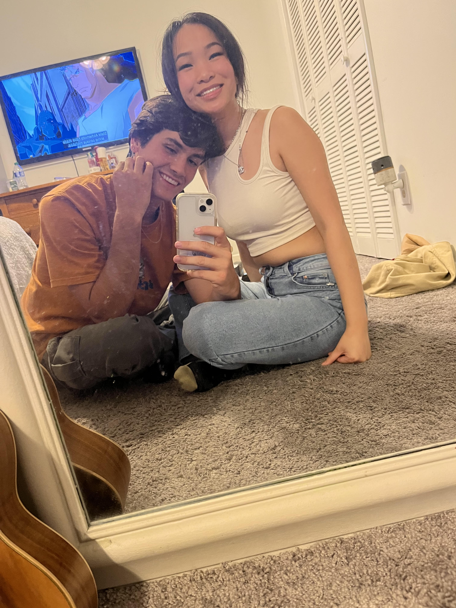

I know what you're thinking. You're looking at the title and saying "Wow. Drew is so hot and sexy and breedable." Heheheh I'm just kidding. You're definetely thinking about how corny that title is. Butttt I ask that you just give this website a chance, you'll most definetely agree with my points
 That last listing is wayyyyy to vague, and I can not sum that up in a list. I'll never be able to sum up how much I love you for you. You're always looking out for me. Whenever I'm there lost, or making a silly decision (like buying another car) you're right there, guiding me through it. You always know what to say to me when I'm feeling down or stressed. And you always know how to make me happier when I'm already just fine. You always listen when I'm going on and on about my day or my passions. You make sure that I know that you care and that you're listening too.
You care, you listen, and most of all, you love. Whenever I'm there in the dark, you are always there for me. I always thought that last year would be the worst year of my life. That still holds true. But you were also able to make it the best year of my life. I cried and wept, but thanks to you, I was able to love. You saved me, and I will never to be able to thank you enough for that. So instead, I'll just love you for it.
I love you vigorously Brittney, Happy Valentines Day.